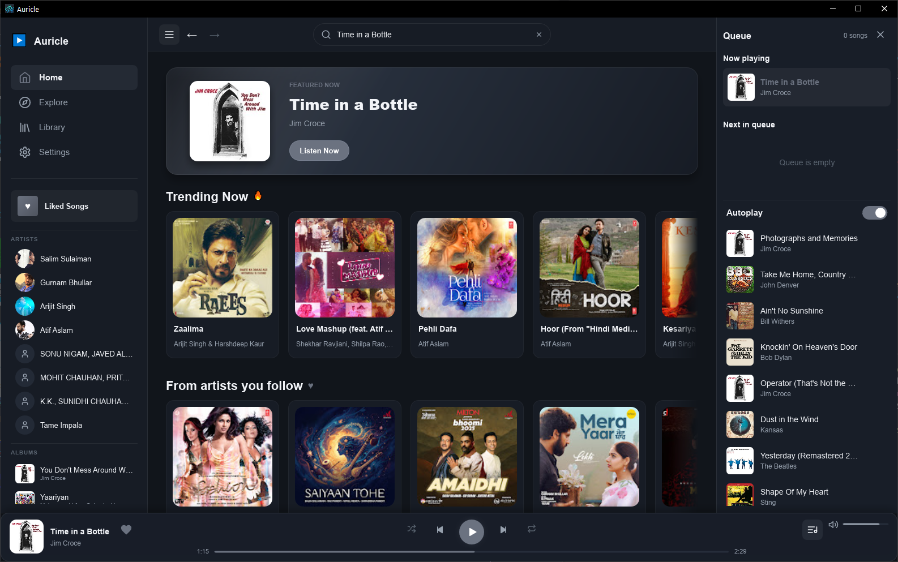

Download
Get Auricle
Free, open source, and available now for Windows.
Latest release: v0.1.2-beta
Requires Windows. yt-dlp and ffmpeg can be installed from the onboarding screen.
Auricle is a lightweight desktop music player built with Rust and Slint — fast search, a persistent queue, OS media-key support, and local audio caching. No web view, no Electron, no overhead.

Auricle strips away the browser layer to give you a snappy, native music experience.
Search YouTube Music's full catalogue instantly via the native ytmapi-rs client.
Your queue and listening history survive across restarts, stored locally with SQLite.
Track what you love and revisit what you've played, offline and always available.
Play, pause, skip — your keyboard media controls just work via souvlaki integration.
LRU on-disk cache (default 500 MB) keeps recently played tracks ready for instant replay.
Built in Rust with the Slint UI toolkit — no Electron, no web view, minimal RAM footprint.
Minimize to tray and keep music running in the background without cluttering your taskbar.
Licensed under GPLv3. Inspect the code, contribute, or fork it freely.
Three steps from download to your first song.
Grab the latest .exe installer from the GitHub Releases page — no account needed.
On first launch, optionally install yt-dlp and ffmpeg with one click from the onboarding screen — or point to your own installation.
Type any artist, song, or album. Hit play. Media keys and the system tray work out of the box.
Free, open source, and available now for Windows.
Requires Windows. yt-dlp and ffmpeg can be installed from the onboarding screen.
Auricle is 100% Rust — fast, safe, and dependency-minimal.
Can't find an answer? Open an issue on GitHub.
No. Auricle never bundles third-party tools. The in-app add-on installer downloads them directly from their official sources on your behalf, with your consent. You can also point Auricle to your own existing installation via PATH.
Auricle is fully open source (GPLv3) — you can read every line of code on GitHub. It makes no network requests beyond fetching music metadata and audio streams from YouTube Music.
Auricle targets modern Windows (10 and 11). It is compiled with MSVC C++ Build Tools and requires no additional runtime installation.
Auricle uses the public YouTube Music catalogue. Some features may work differently depending on your account status. No login is required to search and play.
You need Rust ≥ 1.77.2 and the MSVC C++ Build Tools. Clone the repo and run cargo run --bin native_shell or use npm run run for convenience.
Auricle follows a feature → release/x.y.z → main branch model.
Check out the contributing guide before opening a pull request.